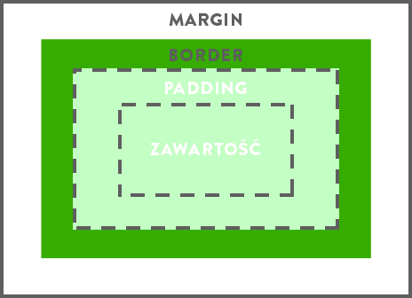

Model pudełkowy
Każdy element na stronie internetowej może być przedstawiony jako "pudełko". W pudełku mogą być kolejne pudełka,
w nich następne itd. Tak zbudowana jest strona internetowa, którą przeglądasz. Jest tutaj jedno główne pudełko, a w nim kolejne pudełka,
zawierające poszczególne części strony.
Pudełko = <div>
Model pudełkowy prezentuje się następująco

Przykładowy kod div'a
<div id="przyklad">Przykład</div>
#przyklad{
width: 300px;
height: 150px;
margin: 10px 20px 30px 40px;
padding: 15px 5px 0px 20px;
border-top: 5px solid black;
border-right: 10px dashed blue;
border-bottom: 2px dotted #00ff00;
background-color:gray;
}
Efekt:
Przykład
Więcej o modelu pudełkowym https://www.w3schools.com/css/css_boxmodel.asp